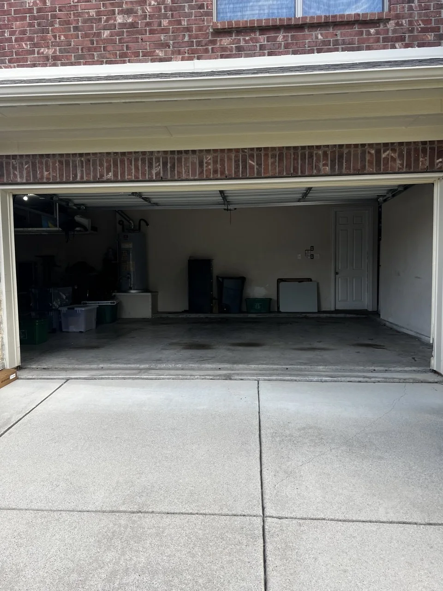
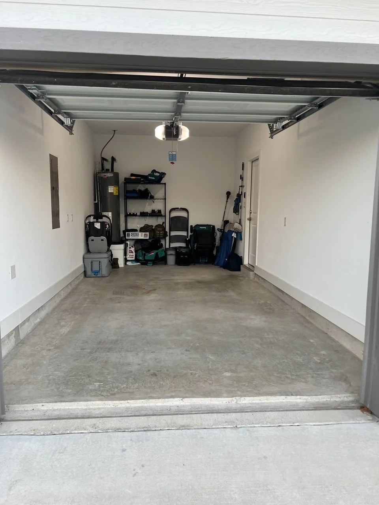
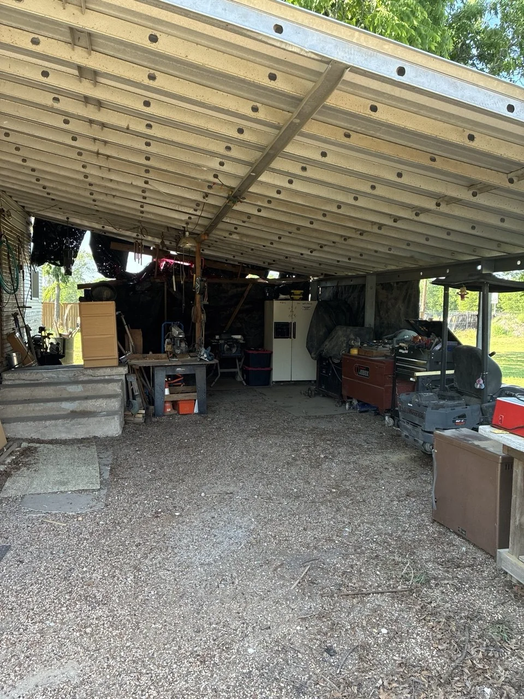
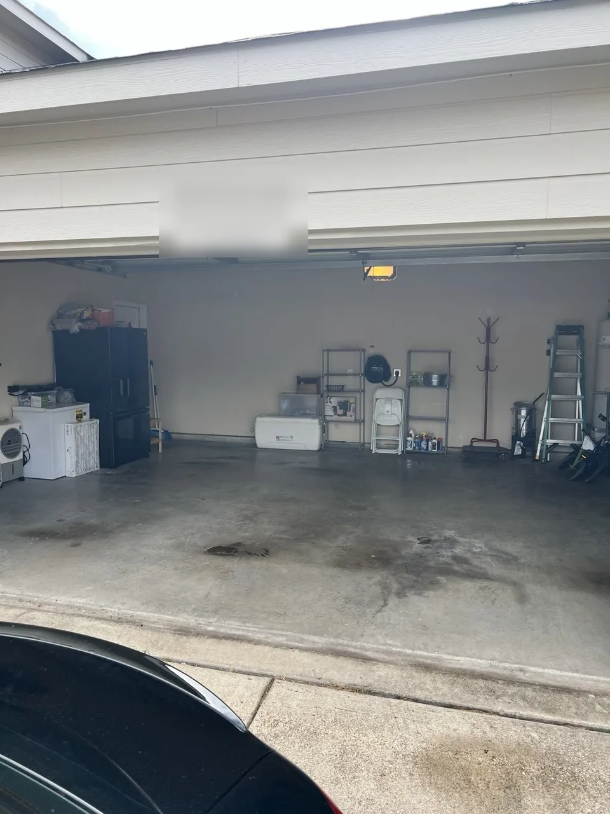
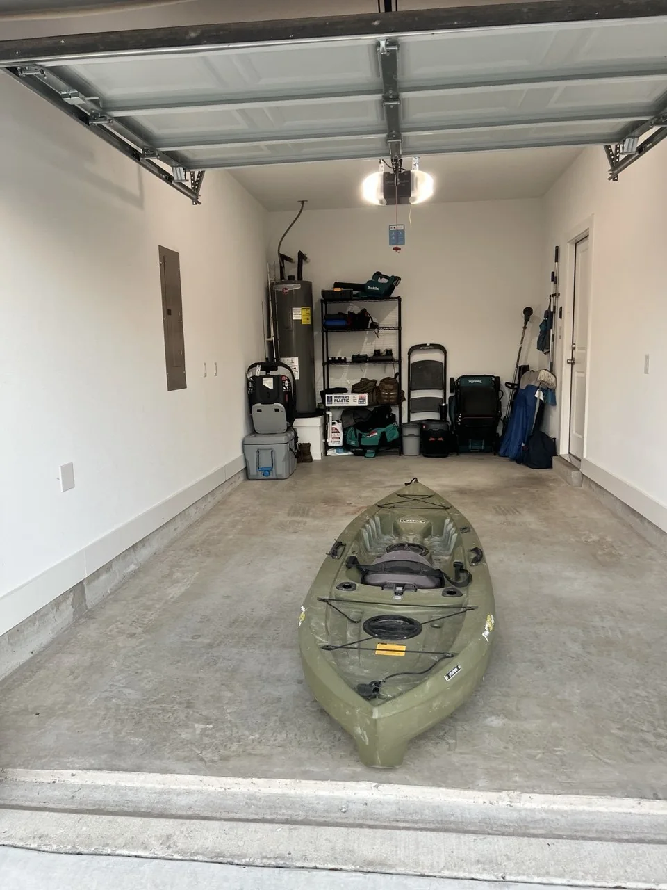
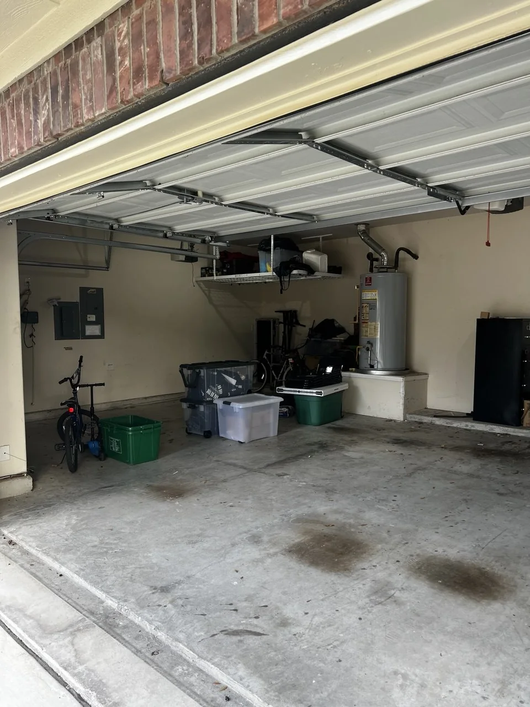
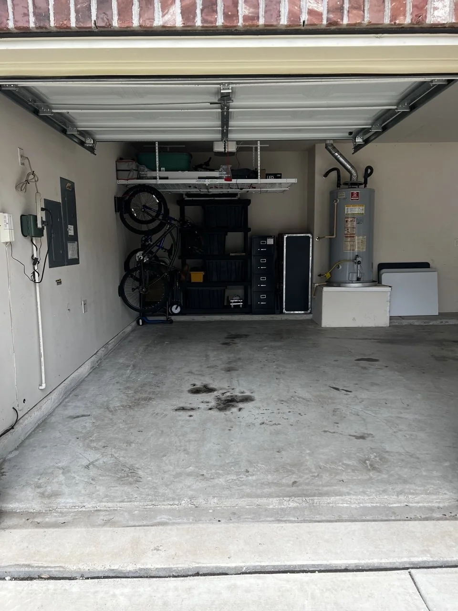
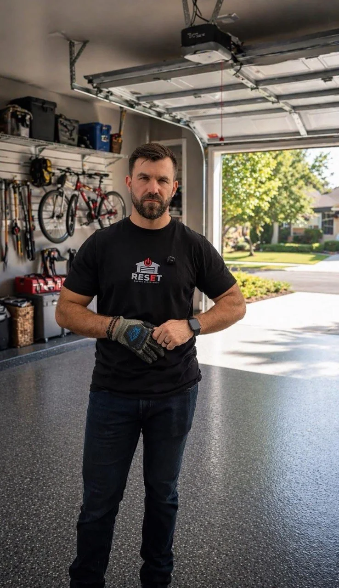

Clearer floor space
Open concrete and safer walkways make the garage easier to move through.
Before / after gallery
Use this gallery to see the kind of practical progress RESET creates: overloaded garages, clearer zones, safer access, and space that works again. These photos help homeowners understand the difference between a vague cleanout promise and a practical reset plan.
What the photos prove
RESET gallery photos are useful because they show real garage conditions: storage walls, bulky gear, utility areas, bins, bikes, tools, open concrete, and walkways. The goal is a garage that works for parking, storage, tools, family gear, or daily access.
Open concrete and safer walkways make the garage easier to move through.
Tools, bikes, seasonal bins, and bulky gear need zones instead of random piles.
A useful reset should be easier for a normal family to maintain after the job is done.

Real reset work
A real garage scene showing the kind of space RESET helps make usable again.

Real reset work
Clear floor space with tools and storage grouped where they belong.

Real reset work
Outdoor storage and equipment areas can be sorted into practical zones too.

Real reset work
Open concrete and defined storage zones make the garage easier to use.

Real reset work
Bulky items like kayaks and equipment need a layout that still leaves room to move.

Real reset work
A real view of garage storage, bins, bikes, and utility areas before final planning.

Real reset work
Bikes, bins, and shelving arranged around clear usable floor space.

Real reset work
Local RESET help for garages and spaces that need to work again.